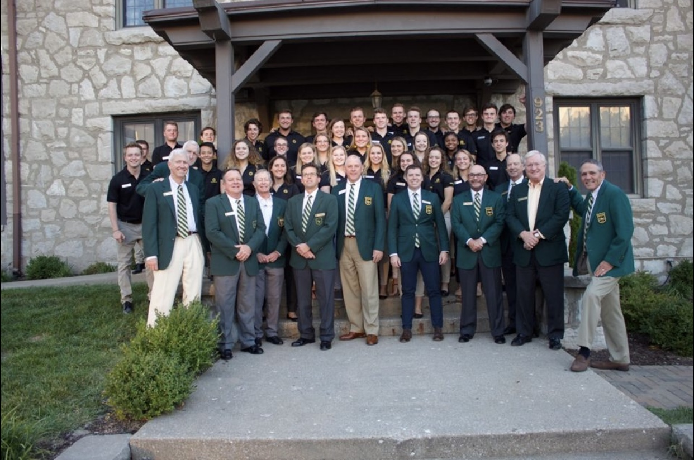
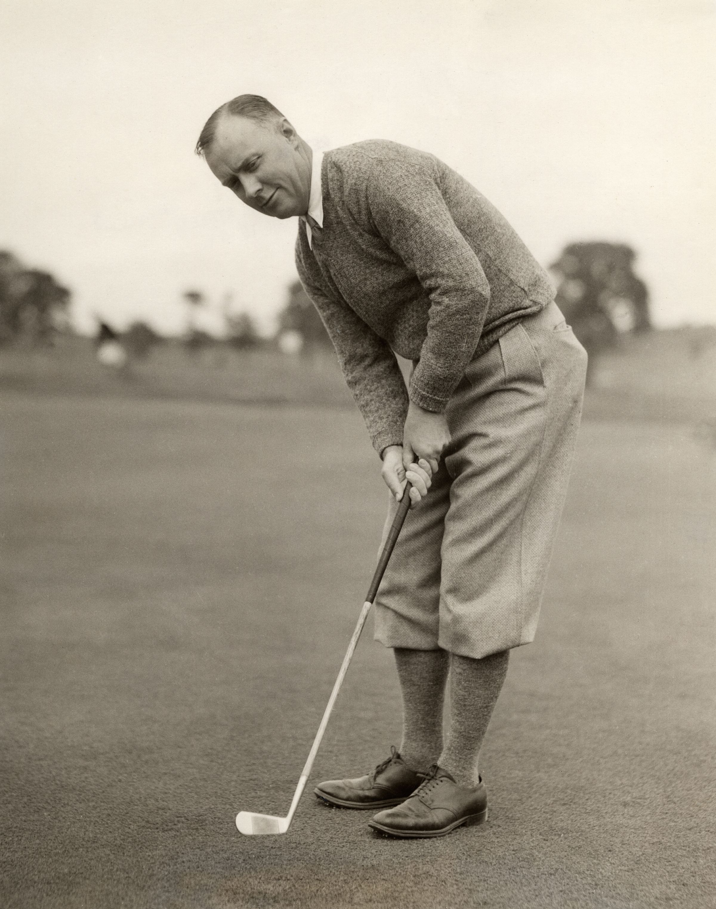

We are the University of Missouri-Columbia Evans Scholars Chapter, associated with the Western Golf Assocation Evans Scholars Foundation (WGAESF).
Evans Scholars are students who are awarded a full housing and tuition college scholarship for demonstrating strong work ethic and leadership as caddies and students.
There are 19 leading universities nationwide that house and enroll Evans Scholars.

The name "Evans Scholarship" derives from the founder and American amateur golfer, Charles "Chick" Evans Jr.
Evans partnered with WGA in 1929 and awarded the first two scholarships in 1930 to Northwestern.
Evans established the Evans Scholars Foundation in 1929 to send deserving caddies to college.

View an Evans Scholar's Personal Story:
Criteria of Scholarship Eligibility:
Applicants must have caddied, regularly and successfully, for a minimum
of two years and
are expected to caddie at their sponsoring club the year they apply for the Scholarship.
Applicants must have completed their junior year of high school with above a B average in
college
preparatory courses and are required to take the ACT and/or SAT.
Applicants must clearly have a need for financial assistance.
Applicants must be outstanding in character, integrity and leadership.
For more details concerning scholarship applications, please visit: WGAESF